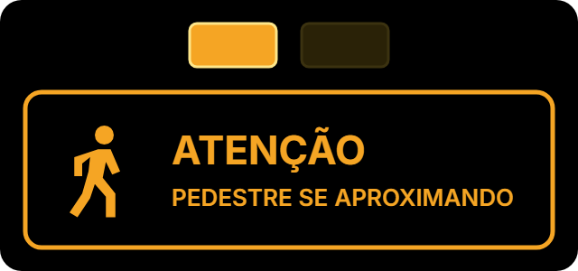
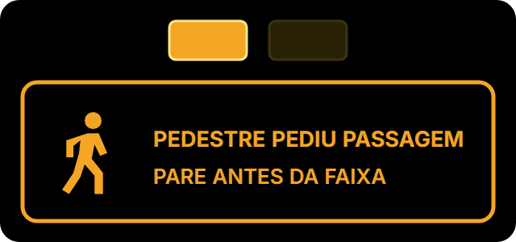
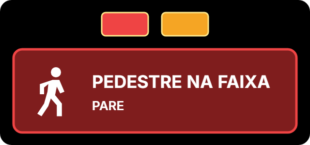

A ideia é simples: primeiro a pessoa sente na pele como é atravessar sem ajuda e sem cuidado. Depois ela joga de novo com o Pit Stop na Faixa e aprende o jeito certo. O jogo tem duas partes e cabe em uns 3 minutos.
O boneco sai do corredor entre os prédios e precisa atravessar a rua. Não há sinal nenhum. Do corredor, ele não enxerga os carros — e os carros não enxergam ele (é exatamente o que acontece no local).
Como se perde: se o jogador atravessar sem olhar para os dois lados, ou na hora errada, acontece o acidente e a fase recomeça.
| Nível | O que muda | O que a pessoa aprende |
|---|---|---|
| 1 · Calmo | Poucos carros, devagar, só de um lado. | Parar antes de entrar na rua. |
| 2 · Mão dupla | Carros dos dois lados. | Olhar para os dois lados, sempre. |
| 3 · Visão tapada | Carros estacionados escondem quem vem; mais movimento. | Da saída do corredor não dá para ver tudo — é perigoso mesmo com cuidado. |
O nível 3 é de propósito difícil: ele mostra que o problema não é só da pessoa, é do lugar. É a deixa para a Parte 2.
Mesma rua, mesmo corredor — agora com a nossa solução. Aparecem na tela: a área de espera pintada no fim do corredor (com "PARE · OLHE" no chão), um sinal para cada sentido da rua e uma telinha para o pedestre.
O que o boneco deve fazer, em ordem:
Os sinais que o motorista vê (use estas imagens; estão em docs/sinalizacao/jogo/):



A telinha do pedestre mostra, na ordem: "Pare na área marcada" → "Pedido recebido! Motoristas avisados" → "ATRAVESSE QUANDO OS VEÍCULOS PARAREM" → "Atravessando: continue atento".
Uma tela curta com o resumo: "Pare na área. Peça passagem. Olhe para os dois lados. Atravesse quando os carros pararem. O sinal ajuda — mas quem confirma é você." Mostrar quantas decisões certas a pessoa tomou (sem ranking de tempo).
docs/sinalizacao/ — veja o LEIA-ME.md de lá. O mesmo desenho aparece na apresentação (modo história),
então jogo e apresentação ficam iguais.
Pit Stop na Faixa · roteiro do jogo educativo · versão de 18/10/2026. Conteúdo a validar com a equipe de segurança da unidade.